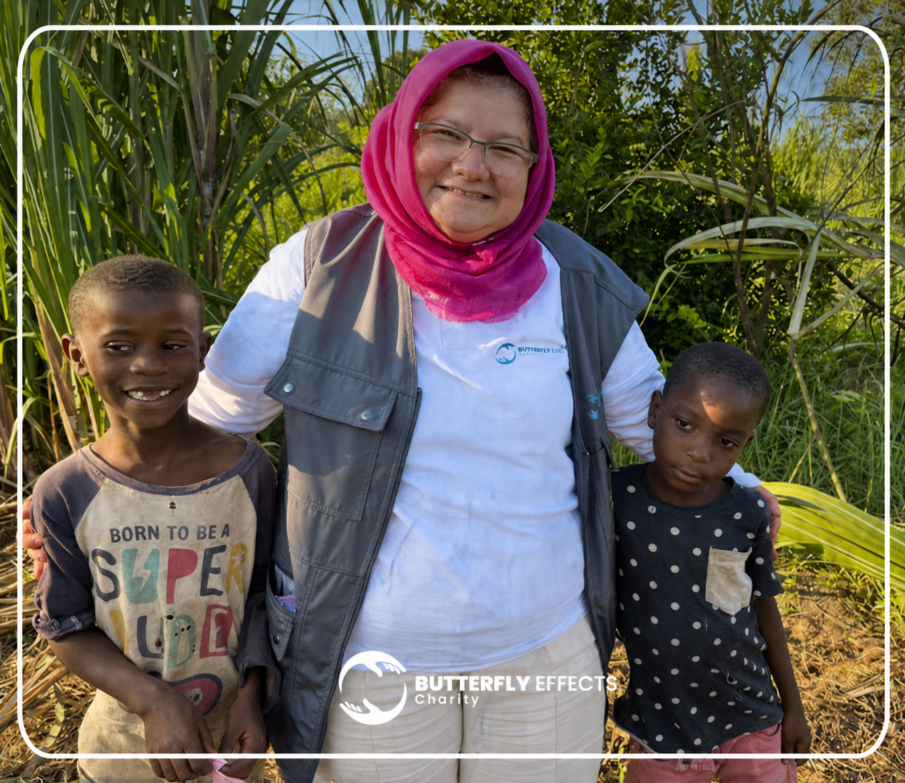

Bedürftige Kinder erhalten Schutz und konkrete Hilfe.
Waisenprojekt
Hoffnung schenken. Leben verändern.
Patenschaften schaffen kontinuierliche Fürsorge und geben Kindern Schutz, Versorgung, Bildung und das Gefühl, nicht allein zu sein.

Verlässliche Begleitung
Keine einmalige Geste.
Eine Waisenpatenschaft ist auf Kontinuität ausgerichtet. Sie verbindet materielle Unterstützung mit Zugehörigkeit und Zukunftsperspektiven.
Die Bestandswebsite bietet monatliche und jährliche Unterstützung sowie besondere Festgeschenke an.
Patenschaft unterstützenDie Bedeutung
Mehr als Versorgung.
Die offizielle Waisenseite beschreibt sechs Wirkungsbereiche, die in der neuen Struktur vollständig erhalten bleiben.
Bildung und Versorgung schaffen Grundlagen für Entwicklung.
Die wirtschaftliche Stabilität des betreuenden Umfelds wird mitgedacht.
Zugehörigkeit und verlässliche Beziehungen können emotionalen Halt geben.
Kinder erfahren, dass Menschen Verantwortung für sie übernehmen.
Patenschaften verbinden Mitgefühl mit langfristiger sozialer Verantwortung.
Bestandteile
So kann eine Patenschaft wirken.
- Regelmäßige monatliche oder jährliche Unterstützung
- Alltagsversorgung entsprechend dem konkreten Bedarf
- Zugang zu Schule, Lernmaterial und Bildung
- Soziale Begleitung und persönliche Entwicklung
- Bayram-Festgeschenke und besondere Hilfsaktionen
- Nachvollziehbare Rückmeldung zur Verwendung
Beitragshöhe, Leistungsumfang, Land, Partner und Berichtsfrequenz werden vor dem produktiven Start verbindlich festgelegt.